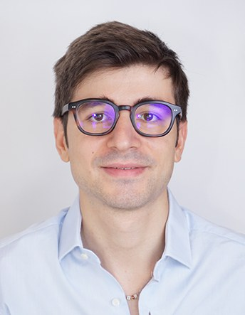

Mattia Galante
PhD student in environmental economics · University of Trento
I am a PhD student in SUSTEEMS (Sustainability: Economics, Environment, Management and Society) at the University of Trento, working on environmental valuation. I use stated preference methods — discrete choice experiments and contingent valuation — to study how people value ecosystems, with a special focus on marine and coastal ones. My current work addresses the methodological challenges and behavioural biases of these methods, and develops new models and applications built on a basket-based approach.
My work sits where environmental and behavioural economics meet: how the design of a valuation survey (cost vectors, incentives, payment formats) shapes the willingness-to-pay estimates it produces.
Part of my research also focuses on cost-benefit analysis and on causal inference about the effects of climate change.
latest news
- Presented Cost vector effects and familiarity in discrete choice experiments at WCERE 2026 in Cascais.
- Attended the ECOBAS–EAERE Summer School on AI in environmental and resource economics, Santiago de Compostela.
- Visiting PhD student at EDHEC Business School, Nice, until May 2026.
- Presented Trends in European finfish consumption at SPUDM 2025 in Lucca.